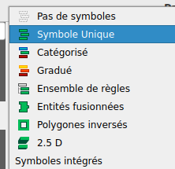
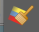

Introduction : accéder au propriétés de symbologie
Dans ce chapitre, nous nous concentrerons sur les trois principaux types de symbologie des couches vectorielles.
Procédure : Accéder au paramétrage de symbologie d'une couche⚓
Remarque :
La fenêtre de paramétrage de la symbologie est ouverte. Vous allez maintenant choisir les type de symbologie que vous souhaitez utiliser.
types de symboles pour les couches de points | Types de symboles pour les couches de polygones |
 |  |
Les types de rendus principaux :
- Aucun symbole : Avec ce rendu, aucun symbole ne sera dessiné pour représenter les entités mais les étiquettes, les diagrammes et tout ce qui ne concerne pas les symboles seront affichés.
- Symbole Unique : toutes les entités de la couche auront la même apparence.
- Symbole Catégorisé : Les entités de la couche seront représenté en fonction d'une catégorie renseignée dans la table d'attribut. S'utilise pourdes valeurs qualitatives ordonnées ou non.
- Symbole Gradué : La couleur ou la taille des symbole variera en fonction d'un valeur numérique renseignée dans la table d'attribut. S'utilise pour des valeur quantitatives relatives, des nombres décimaux.
Autres types de rendus :
Sur les couches de points des options particulières permettent d'agréger les points avec différentes formes de cluster : groupe de points, déplacement de points ou carte de chaleur.
Sur les couches de polygones, d'autres options particulières sont proposées :
- les entités fusionnées : fusionne tous les polygone en un seul, effaçant de ce fait les limite internes. Très utile pour représenter le contour d'une couche constituée de plusieurs polygones contigu. Par exemple, la couche des régions Française traité de cette façon ne représentera plus que le contour de la France.
- le polygone inversé : les règles de symbologie sont appliqué à l'extérieur dun polygone plutôt qu'à l'interieur. Très utile pour faire une couche de masque.
- Rendu 2.5D permet de créer un effet 2.5D sur les entités de votre couche.
Si vous souhaitez réaliser une carte statistique avec un figuré proportionnel pour représenter des effectifs (variable quantitatives de stock ou des valeurs discrètes), il faut appliquer une méthode particulière qui sera détaillée dans un chapitre spécifiquement dédié à la création de cartes statistiques (13. La cartographie statistique)
Pour modifier la façon dont les entités d’une couche sont représenté sur la carte, vous devez sélectionner la couche dans le panneau Couches, faire un clic-droit et ouvrir les Propriétés.
Vous pouvez également double-cliquer sur la couche pour ouvrir sa fenêtre de propriétés.
 Sélectionner l'onglet Symbologie sur la gauche